“Our Flag Does Not Fly Because The Wind Moves It, It Flies With The Last Breath Of Each Soldier Who Died Protecting It.”
A.Facts About The Indian Armed Forces That’ll Make You Respect Them Even More
1. India controls the highest battlefield in the world, the Siachen glacier, at 5000 metres above Mean Sea Level (MSL).
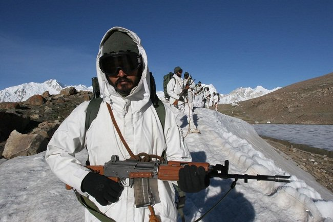
2. India has the biggest "voluntary" army in the world.
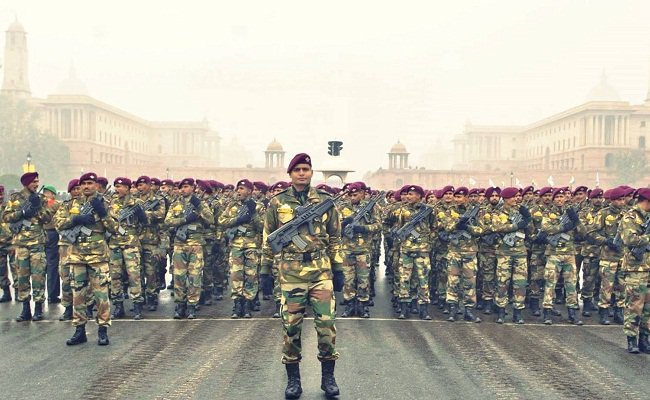
All serving and reserve personnel have actually “opted” for service. There is a provision for conscription (forced recruitment) in the constitution, but it has never been used.
3. Indian soldiers are considered among the very best in high altitude and mountain warfare.
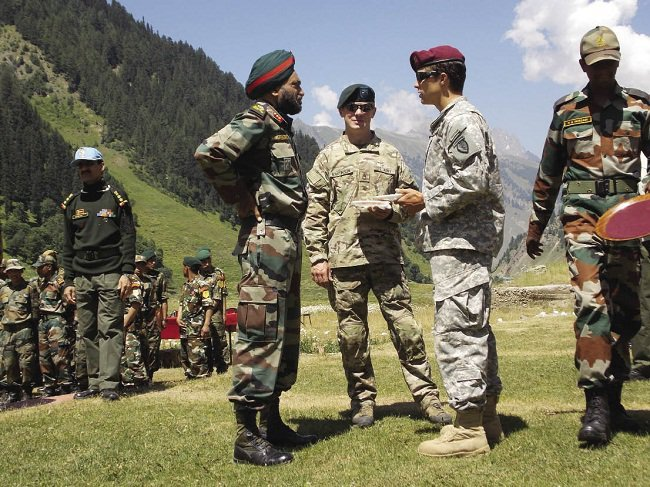
The Indian army’s High Altitude Warfare School (HAWS) is one of the most elite military training centers in the world and is frequented by Special Ops teams from the U.S, U.K & Russia. U.S Special Forces trained at HAWS before their deployment during the invasion of Afghanistan
4. India covertly tested its nuclear arsenal in the early 1970s and late 1990s without the CIA even knowing what was happening.
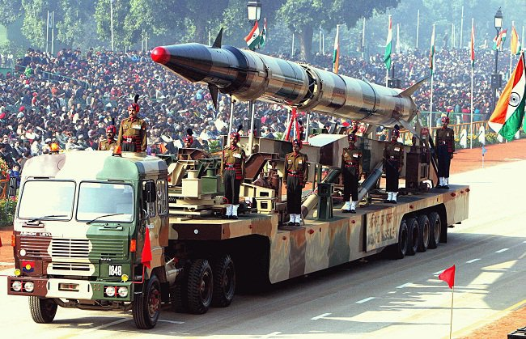
Till date, it is considered to be one of the CIA’s biggest failures in espionage and detection.
5. Unlike other government organisations and institutions in India, there are no provisions for reservations based on caste or religion.
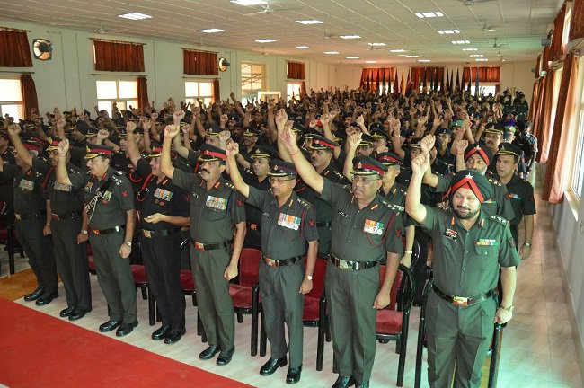
Soldiers are recruited based on their overall merit and fitness based on stringent tests and trials. And once a citizen of India joins the forces, he/she becomes a soldier. Nothing else. Nothing more
6. In the Battle of Longewala, on which the famous Bollywood movie “Border” is based, there were only two casualties on the Indian side.
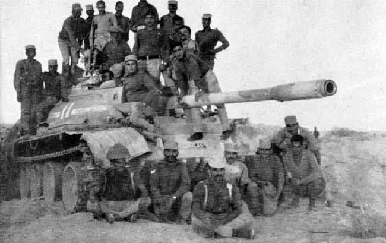
The Battle of Longewala was fought in December 1971 between India and Pakistan, in which just 120 Indian Soldiers with 1 jeep mounted M40 recoilless rifle held the fort against 2000 Pakistani soldiers backed by 45 tanks and 1 mobile infantry brigade. Despite being heavily out-numbered, the Indian soldiers held their ground throughout the night and with the help of the Air Force, were able to completely rout the aggressors.
7. Operation Rahat (2013) was one of the biggest civilian rescue operations ever carried out in the world.
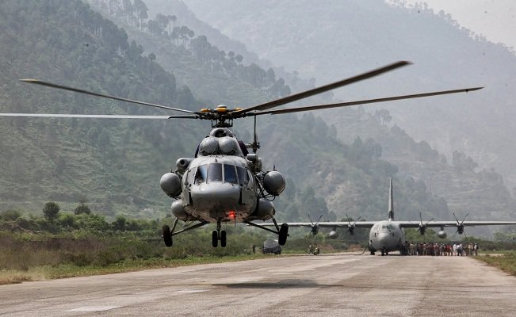
It was carried out by the Indian Air Force to evacuate civilians affected by the floods in Uttarakhand in 2013. It was the biggest civilian rescue operations in the world carried out by any Air Force using helicopters. During the first phase of the operation from 17 June 2013, the IAF airlifted a total of about 20,000 people; flying a total of 2,140 sorties and dropping a total of 3,82,400 kg of relief material and equipment.
8. The Ezhimala Naval Academy in Kerala is the largest of its kind in Asia.
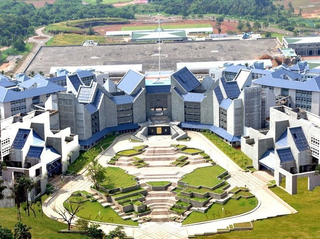
9. The Indian army has a horsed cavalry regiment. It is among one of the last 3 such regiments in the world.
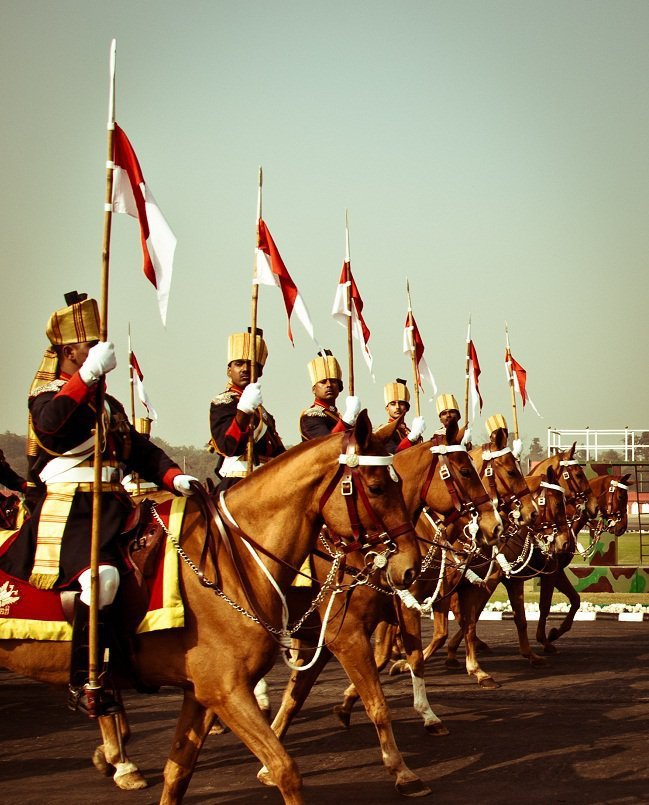
10. The Indian Air Force has an out-station base in Tajikistan and is seeking another in Afghanistan.
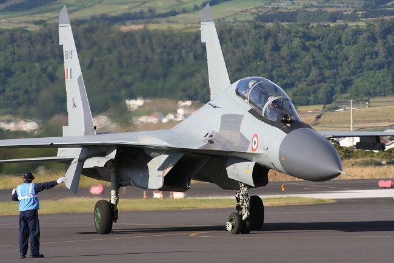
11. The Indian Army built the highest bridge in the world.
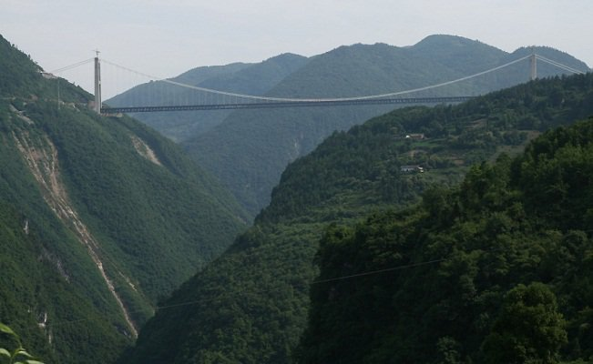
The Bailey Bridge is the highest bridge in the world. It is located in the Ladakh valley between Dras and Suru rivers in the Himalayan mountains. It was built by the Indian Army in August 1982.
12. The Military Engineering Services (MES) is one of the biggest construction agencies in India.
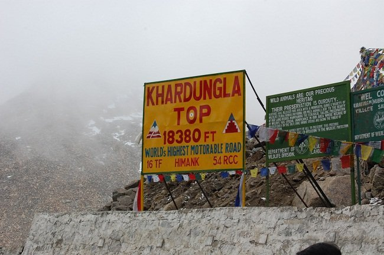
The MES and Border Roads Organisation (BRO) are together responsible for the construction and maintenance of some of the most awesome roads and bridges ever to have been built. To name a few, the Khardungla Pass (the highest motorable road in the world), the Magnetic Hill in Leh, etc.
13. The Indo Pakistan War of 1971 came to end with the surrender of about 93,000 combatants and officials of the Pakistani Army.
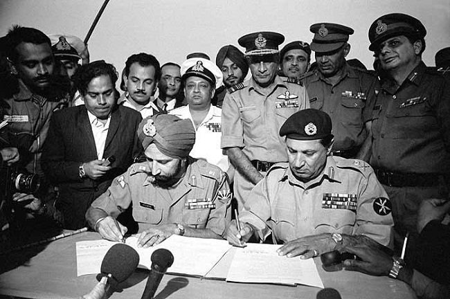
This is the largest number of POWs taken into custody since World War II. The war resulted in the creation of the independent state of Bangladesh.
14. The Missiles
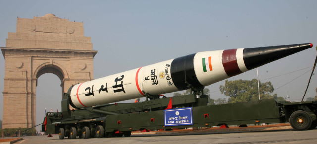
India’s Agni-V missile can cover the range of 8,000 km in any direction with the speed exceeding that of the bullet. The missile can carry 1.1 tonne of nuclear warhead over 5,000 km. The accuracy of it reaches the target within a few meters of precision. This missile alone is the perfect tool for answering any weaponry threat to the country. Another set of Indian missiles, Prithvi missiles are best known their short range, precision, carrying nuclear warhead and for emergency use. The missile has the strike range of 350 km and can carry 1000 kg of nuclear warhead. These missiles aren’t the only iconic missiles that India has created. But there are a lot other missiles like BrahMos, Akash, Trishul and Nag.
“Our flag does not fly because the wind moves it, it flies with the last breath of each soldier who died protecting it.”